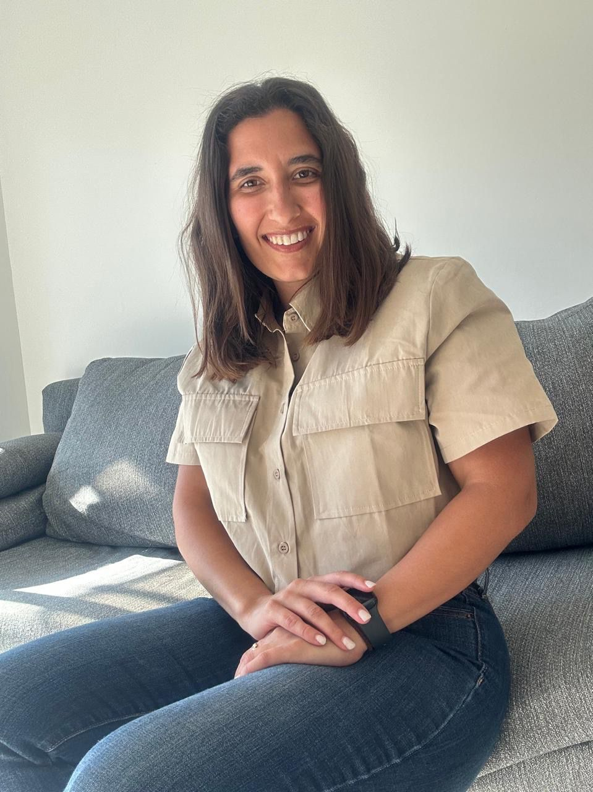
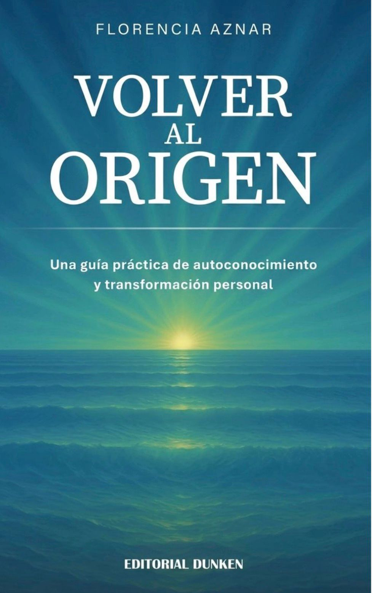

Habita tu máximo potencial.
Un espacio de autoconocimiento y dirección personal para quienes buscan entenderse, desbloquearse y avanzar con claridad.

"El cambio no ocurre en la mente, ocurre en el ser."
Muchas veces el problema no es la falta de capacidad.
Es estar funcionando desde patrones mentales y emocionales que te hacen frenarte automáticamente cuando querés avanzar.
Todos tenemos una manera de pensar, reaccionar y actuar. Y cuando no entendemos cómo funcionamos internamente, terminamos:
- procrastinando
- dudando constantemente de nosotros mismos
- perdiendo claridad
- dispersándonos
- o repitiendo las mismas situaciones una y otra vez
No se trata de hacer más.
Se trata de entender qué necesitás cambiar para empezar a avanzar de verdad.
Sobrepensás tanto las decisiones que terminás paralizándote.
Empezás motivado/a, pero después te cuesta sostener.
Tenés muchas ideas, pero te dispersás fácilmente.
Sentís que repetís siempre los mismos patrones.
Probaste distintas formas de avanzar, pero seguís sintiéndote trabado/a.
Hacés mucho, pero sentís que no avanzás realmente.
Conocé a Flor Aznar
Mi camino comenzó en el mundo del marketing. Soy Licenciada en Marketing y durante los años en los que ejercí mi profesión descubrí que lo que realmente me apasionaba era acompañar a las personas y ayudarlas a potenciarse para atravesar cualquier desafío.
Ese descubrimiento me llevó a adentrarme en el mundo del coaching. Me formé en EDPyN Barcelona (España), institución avalada por la ICF – Level 2, realicé un Máster en Recursos Humanos y actualmente continúo mi formación estudiando Counseling (Consultoría Psicológica).
A lo largo de este camino entendí algo fundamental: muchas veces las personas no avanzan en su vida no por falta de capacidad, sino porque no se conocen lo suficiente y terminan repitiendo patrones o creencias que las mantienen en el mismo lugar.
Hoy mi trabajo está enfocado en ayudar a las personas a conocerse más profundamente, comprender qué les está pasando y encontrar claridad para avanzar en su vida.
El Método RAP: Una Evolución Radical
Un viaje estructurado desde la claridad interna hacia la manifestación externa, diseñado para líderes de alto impacto.
Reconocimiento
Identifica las narrativas silenciosas y los techos de cristal invisibles que te alejan de tu frecuencia auténtica.
Acción
Implementación estratégica de nuevos comportamientos. Traducimos la visión en hábitos de alto rendimiento.
Potencial
Encarnar tu versión más elevada. Crecimiento sostenible y la realización de tu visión en cada esfera de la vida.
Flor Aznar explica el proceso
Un proceso de tres etapas diseñado para ayudarte a entender qué te frena y empezar a avanzar de verdad.
No es un curso ni una lista de consejos. Es un acompañamiento personalizado donde trabajás directamente con lo que está pasando en tu vida hoy.
30 días de proceso
Con acompañamiento personalizado en cada etapa
100% personalizado
Adaptado a lo que hoy te está pasando a vos
Qué incluye el proceso
3 sesiones 1:1 personalizadas
Cada sesión está enfocada en una etapa específica del proceso y adaptada a lo que hoy te está pasando.
Ejercicios entre sesiones
Después de cada encuentro recibís ejercicios concretos para integrar lo trabajado. Porque el cambio pasa en lo que hacés después.
Acompañamiento directo
Canal de consultas personalizado de lunes a viernes de 9 a 17hs. Si algo surge o necesitás orientación, estoy disponible.
Guía práctica con acciones concretas
Al finalizar recibís un análisis personalizado con anclajes para reconocer tus patrones y actuar diferente cuando aparezcan.
Libro de acompañamiento
Un recurso con herramientas y ejercicios para que puedas seguir integrando el proceso de manera autónoma.
Análisis previo a la primera sesión
Antes de arrancar hacemos un análisis inicial para que la primera sesión arranque con foco y sin tiempo perdido.
Volver al Origen
Una guía práctica de autoconocimiento y transformación personal. Un libro para quienes quieren entenderse mejor, desbloquearse y empezar a construir una vida más alineada con quienes realmente son.

Nuestros Servicios

Coaching Individual Profundo
Un contenedor personalizado y de alta intensidad para cambios transformadores. Adaptado a tus metas únicas.
- check_circle Sesiones estratégicas quincenales
- check_circle Soporte de implementación bajo demanda
Talleres Inmersivos
Experiencias grupales diseñadas para facilitar avances colectivos y aprendizaje entre pares.
Para quién es este proceso
Este proceso es para vos si…
- check
Sentís que algo interno te frena aunque sabés que podrías avanzar más.
- check
Querés dejar de sobrepensar y empezar a actuar con más claridad.
- check
Estás cansado/a de repetir los mismos bloqueos.
- check
Querés entenderte mejor para tomar decisiones distintas.
- check
Buscás avanzar de una forma más alineada con vos.
Este proceso no es para vos si…
- close
Buscás soluciones mágicas sin hacer un trabajo interno.
- close
Querés resultados inmediatos sin involucrarte en el proceso.
- close
Preferís seguir evitando las decisiones que sabés que tenés que tomar.
- close
No estás dispuesto/a a observar tus propios patrones.
"Trabajar con Flor fue el catalizador que no sabía que necesitaba. El Método RAP me dio una estructura para entender mi propia ambición sin perder mi esencia."
Elena Rodríguez
CEO & Directora Creativa
Nombre Apellido
Descripción breve
Nombre Apellido
Descripción breve
"[Testimonio escrito — agregá el texto real de esta persona]"
Nombre Apellido
Descripción breve
"[Testimonio escrito — agregá el texto real de esta persona]"
Nombre Apellido
Descripción breve
Tu inversión está protegida.
Si al terminar el proceso sentís que seguís exactamente en el mismo punto y no lograste identificar con claridad qué patrones te estaban frenando, vas a tener 15 días extra de acompañamiento sin costo adicional.
Porque si vos estás dispuesto/a a hacer el proceso, yo también estoy dispuesta a acompañarte hasta que algo real cambie.
Tu inversión
Método R.A.P. completo
Consultá sobre planes de pago
-
check_circle
3 sesiones 1:1 personalizadas
Encuentros individuales diseñados en función de tu proceso, tu ritmo y lo que necesitás trabajar.
-
check_circle
Ejercicios entre sesiones
Después de cada encuentro recibís ejercicios concretos para integrar lo trabajado. Porque el cambio no pasa solo en la sesión, pasa en lo que hacés después.
-
check_circle
Acompañamiento directo entre sesiones
Tenés un canal de consultas personalizado de lunes a viernes de 9 a 17hs. Si algo surge, si tenés una duda o necesitás orientación en el proceso, estoy disponible.
-
check_circle
Guía práctica con acciones concretas
Al finalizar el proceso recibís un análisis personalizado con anclajes para reconocer tus patrones en el futuro y actuar diferente cuando aparezcan.
-
check_circle
Libro de acompañamiento
Un recurso con herramientas y ejercicios para que puedas seguir integrando el proceso de manera autónoma, sin depender de un acompañamiento constante.
-
check_circle
Análisis previo a la primera sesión
Antes de arrancar hacemos un análisis inicial para que la primera sesión arranque con foco y sin tiempo perdido.
Garantía de 15 días adicionales incluida
¿Iniciamos la conversación?
Toda evolución comienza con una sola pregunta. Contáctame para explorar cómo podemos trabajar juntos.